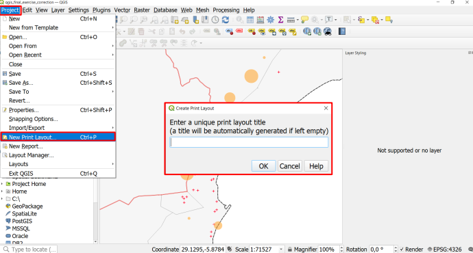
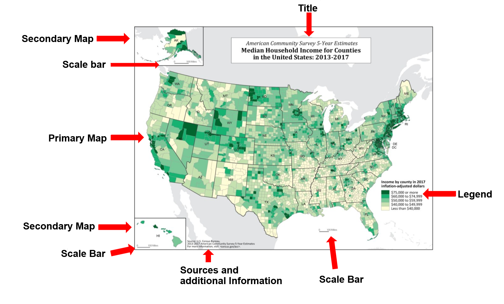
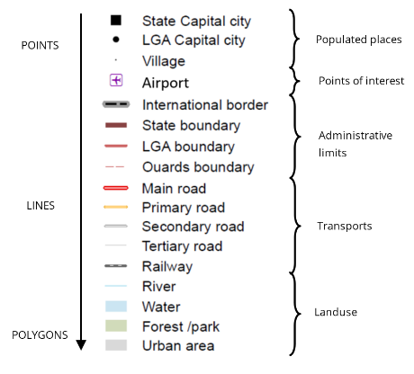
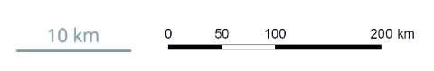

4.6. The Print layout#
The print layout in QGIS is where you design and finalise the map in order to print or export it as a PDF (or file format of your choice). Here you can add important elements such as the legend, title, explanatory text, and anything you need to create a comprehensive map. By adding layout elements (legend, title, scale bar, sources, etc.) to a map, you provide your audience with the necessary information to contextualise and evaluate the information shown on the map.
Go to Project > New Print Layout > enter a name for the new print layout > click OK
A new window with a blank print layout will appear.

Fig. 4.45 Create a new Print Layout#
4.6.1. Map Composition#
A good map guides the reader in understanding the information available on the map, makes the information easily accessible, and is not overloaded with information.
In general, there are a few things to keep in mind when creating a map:
The main map should cover the largest portion of the page and be centred.
A complete map must have a legend, sources, title, scale, and necessary other information to contextualize the information presented on the map.
Additional information, such as title, sources, scale bar, legend, orientation, etc. should be scaled accordingly.
Titles should be large so the reader can identify it as the main topic of the map.
Additional information should be smaller and moved out of the main focus of the page (e.g. at the bottom, to the sides, or in the corners).
A well-structure page layout helps the reader discern the different information on the map and makes it easier to know where to look for certain information. Frames and boxes can structure the page layout. For example, a legend can be put on the bottom or to the right of the map.
In order to produce good maps, there are some basic rules to follow and semiological mistakes to avoid. The following subchapter will go over the key elements of a map as well as common design mistakes
4.6.1.1. Key elements of a map#
In order to provide your audience and readers with sufficient information so they can contextualise the map, it is important to add these key map elements:
Title
Legend
Scale
Orientation
Source
Overview Map
Author

Fig. 4.46 Elements of good map composition#
The title summarises in a few words the information represented on the map, giving the reader useful contextual information. Titles should include the following information:
The place, with several degrees of precision according to the scale (Country, Region, Township, …)
The subject intelligible by all (make sure that any acronyms used are specified elsewhere on the map)
the date of the represented data
Examples:
“Access to health care in Maputo, Mozambique in 2022”
“Flooding Risk in Ghardaïa, Algeria”
The legend is key to interpreting the information represented on the map. Without it, it is impossible to understand the meaning of the different symbols and colours used map. In order to guide the reader, the legend must be:
Comprehensive: All the data on the map must be presented in the legend.
Representative: The figures on the map and in the legend must match (same size, same color, …).
Organized: The data in the legend can be grouped by thematic categories (health, environment, background map, …) or by type of figure (point, line, surface) to facilitate reading.

Fig. 4.47 Example of a well organized legend#
The scale bar is essential to a map since it gives the correspondence between a distance measured on the map and the distance in the real world. There are two types of scales:
The numerical scale is expressed as a fraction (1/25000 or 1:25000) that indicates the ratio between 1 centimetre on the map and the actual distance. It is a scale that can be calculated with GIS software, and is often found in topographic maps. A scale of 1:25000 means that 1 cm represents 25,000 cm (or 250 meters) on the ground.
the graphical scale is expressed by a line on the map, with an associated distance value. This scale is very useful for understanding distances on the ground. The graphical scale will always be the correct size, even if a different printing format is used, since it will undergo the same transformation as the rest of the map

Fig. 4.48 Scale bar examples#
4.6.1.2. Orientation#
Even though the majority of the maps are oriented towards the north, it is still necessary to specify the orientation of your map. This is often indicated by an arrow pointing to the north, as sometimes a non-northwards orientation is used to represent the study area.
4.6.1.3. Sources#
Any data represented on a map should have its sources indicated. This provides a record of the data used, but also credits the author of the data. The reader will then be able to look for more information on the sources if he wishes. Open access geographic data, such as OpenStreetMap, are increasingly population and must also be cited on maps.
It is possible to give the source of each data under the legend, or to do so in a dedicated space in the map. The level of precision of the sources varies according to the author or the precision of the data.
Now it’s your turn!
Take a look at the maps below and pay close attention to how the cartographers arranged the different elements. You can also take a look at maps you encountered in your work or daily life.
Map Example 1

Fig. 4.49 Flood affected areas and roads in the Somali Region, Ethiopia (Source: OCHA)#

Map Example 3

{kind=link}
{kind=link}
{kind=link}
Map Example 4

Fig. 4.52 Operational overview or response activity map (Source: Shelter Cluster Vanuata)#
Now that we have covered what to keep in mind when designing maps, let’s take a look at how to create maps with the print layout composer in QGIS.